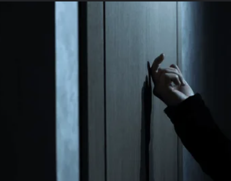

WHOSE SHADOW IS THIS
Skye was awaken and she was screaming. When I entered into the house, she hugged me so hard. And said that there is something
wrong. She has seen two shadows outside window. I had seen kept the box and book inside my bag and saidthat it might be her false vision.
It was getting dark, so I said that we should go from here. But she had closed the doors. She was scared, so I consoled her.
I said that she might be tired and due to imporoper amount of rest, she get false vision.But she denied. I sat there and started chanting
prayer, because I was very disturbed about these things. Suddenly I have also seen a shadow from the window. We both get scared. Suddenly,
we had seen fire outside window. Our fear raised ten times more. I said someone has set the forest on the fire. But Skye remarked " The someone is may be Ghost"
It made me scared.
But suddenly the shadow started knocking the door. Our fear is at the extreme level, we screamed. Suddenly the shadows get multiplied.
And seems a crowd of Ghosts were there. The house was noised by another sound. There was a continous vibrations on Skye's phone.
It was hospital's number. I picked up the phone.

The lady on another side asked me to open the door because they sent the ambulance and they are outside the house.
And we are acared of no reason. But still Skye was deniying to oopen the door. So, she hid herself with creepers under the table.
I had gathered all my courage and opened the door, the people outside were from the hospital and the fire is from dry leaves made by
visitors.
I and Skye went to the hospital, she was weak so, she got admitted. There I met to Mr. S.Nathu. He is very old, thin and weak now.
I have shown his booka nd the box. He has given the key and asked me to complete the project ~ AMRIT.
And after taking his health details. I wished him to get well soon. I have taken Skye to our house.
Next day, I opened the box and started the project ~ AMRIT, research. Skye is bioscientist so, she has taken the project.
And I went to our company. Our group is taking the readings of the frequencies that are coming from the space.
Something was coded into mysterious language. And this radiowave has a connection from earlier, Voyger and James Webb telescope.